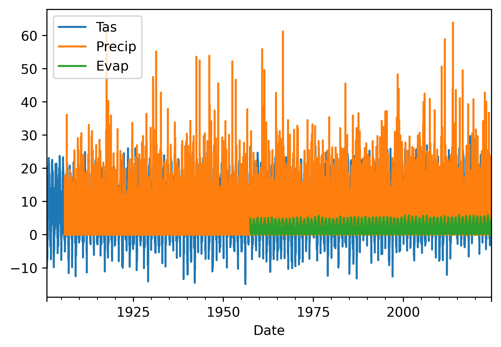
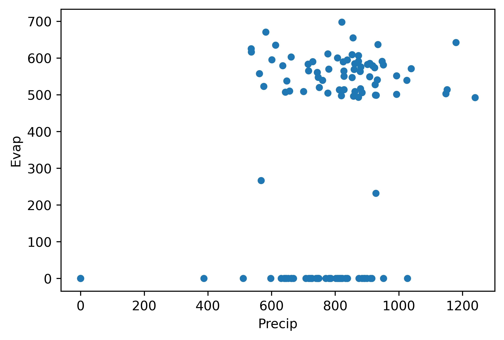
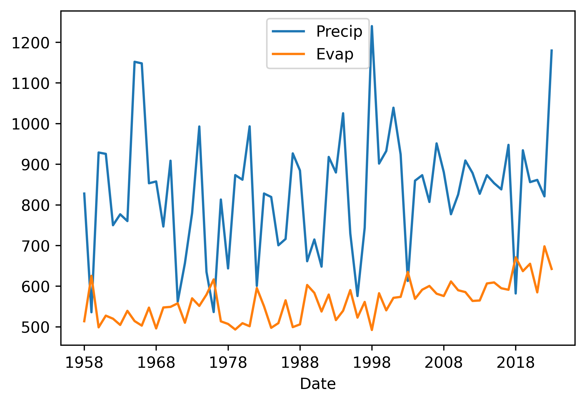
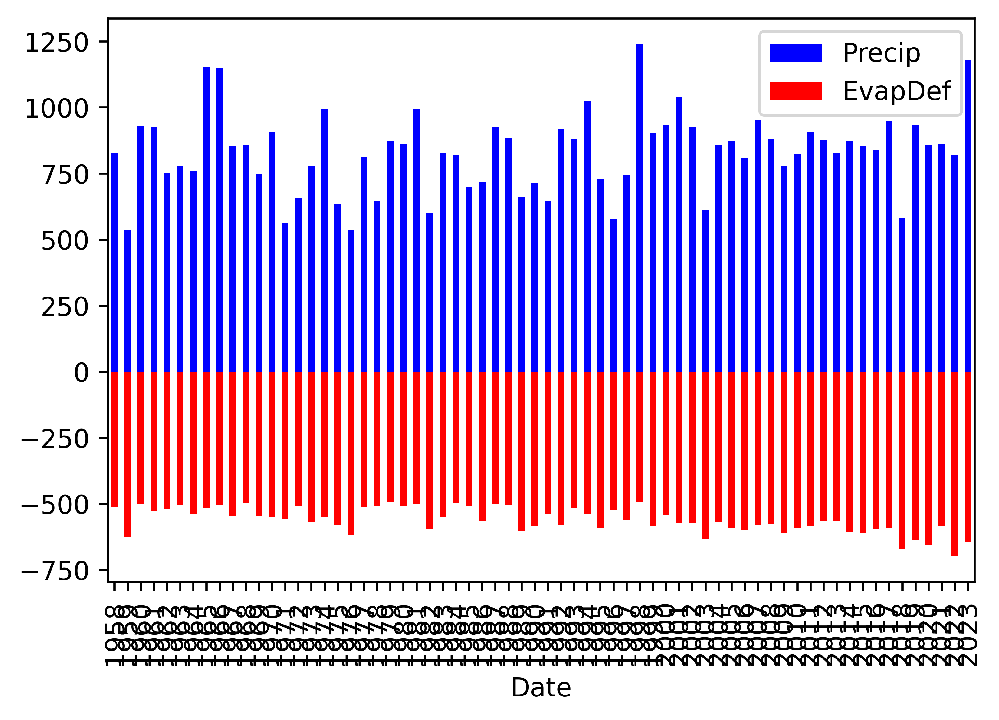
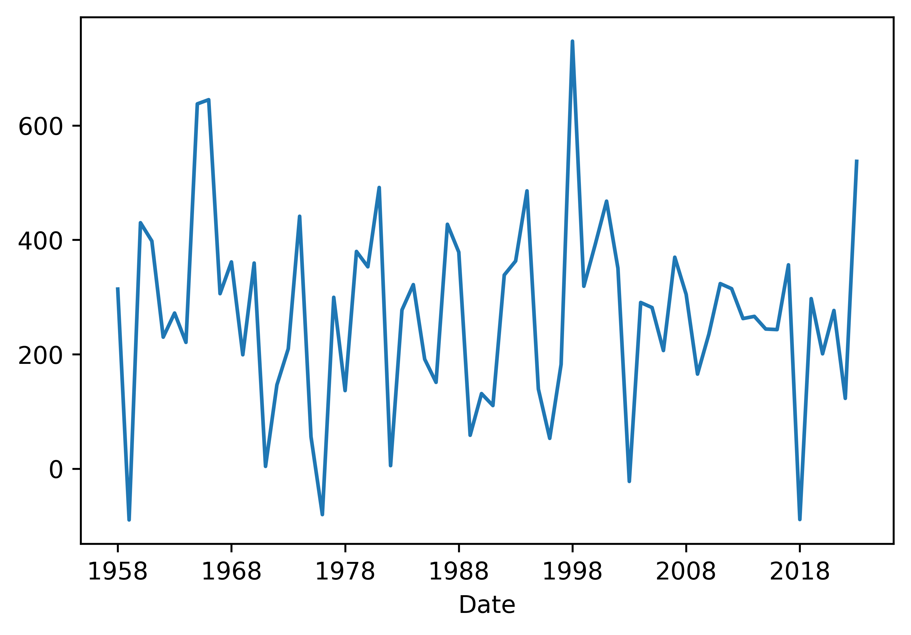
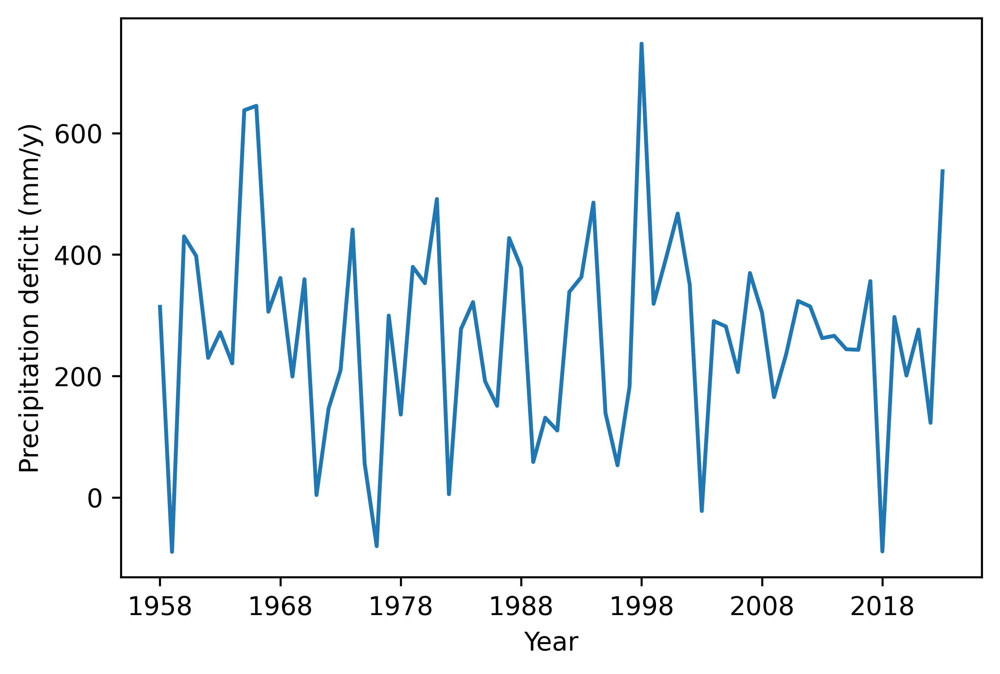
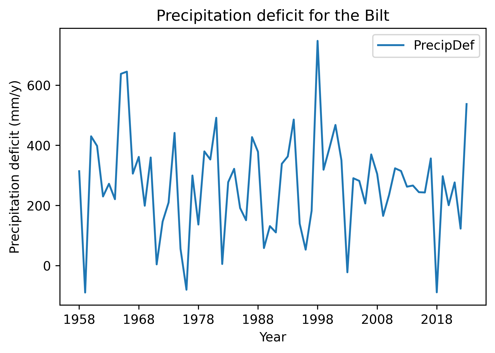
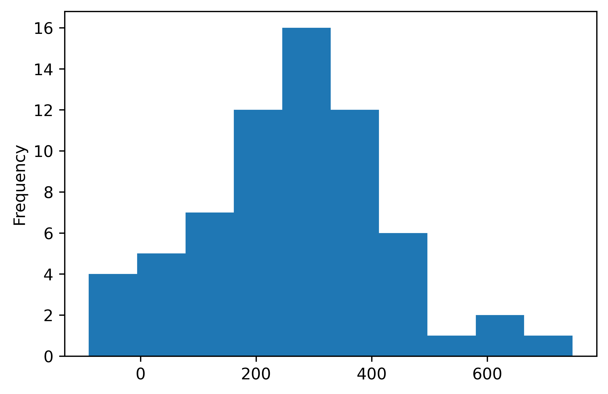

Making visuals, graphs and figures of your data, as start
Background to this example
Data comes in all sorts and forms within Earth sciences, from long term paleo records describing Oxygen levels in the atmosphere, timeseries of river discharge and spatio-temporal satellite images monitoring the vegetation. Within Earth Sciences we work with all these types of data to understand the past, present and future of the Earth system. Before we can work with these types of data we need to understand what we can and cannot do with the data, which conclusion we can and cannot draw.
In this practical you will learn about
Visualizing data
What kind of figure to use
Getting started
Let’s start with using Python again by opening your Conda environment and then opening Spyder (for detailed instructions please look back at the first practical). We start by loading some of the stand libraries in this course. We use:
Pandas (data management and data handling)
Numpy (statistical analysis and data handling)
Matplotlib (plotting)
Scipy (statistical analysis)
import pandas as pd
import matplotlib.pyplot as plt
import numpy as np
import scipy.stats as statsNow we are going to take a look at the first dataset which contains information about the daily temperatures in the Netherlands. We tell pandas to parse the date information, and use it as row labels:
Tas = pd.read_csv("../Data/dailyTemperature.csv", parse_dates=True, index_col=0)
Pr = pd.read_csv("../Data/dailyPrecipitation.csv", parse_dates=True, index_col=0)
E = pd.read_csv("../Data/dailyEvaporation.csv", parse_dates=True, index_col=0)We have now loaded three individual files that all contain meteorological information, however it is more powerful if we can join these datasets into one dataset where all the data is aligned to produce a dataframe where the different columns have the different meteorological variables for any given date between 1901 and now. To do this you can use the join function, this functions joins different dataframes based on their index, which in this case is a date, but can also be an integer or something else.
meteoData = Tas.join(Pr).join(E)If you have done this you will now have one dataframe meteoData that contains Temperature, Precipitation and Evaporation data. The advantage of this dataframe is that now we can perform operations on the dataframe for all three variables combined or we can select data on a condition for one of the columns and automatically get the values for the other variables for the same dates. You can now also more easily look for dates that are for example dry and warm.
Now first let’s look at some basic statistical properties of the data using the describe function. It will give you things like the number of observations, the mean, standard deviation, min, max and quantile data.
meteoData.describe()
Tas Precip Evap
count 45097.000000 43241.000000 24462.000000
mean 9.582449 2.202093 1.535635
std 6.288493 4.388798 1.321192
min -14.900000 0.000000 0.000000
25% 5.100000 0.000000 0.400000
50% 9.800000 0.100000 1.200000
75% 14.500000 2.500000 2.400000
max 29.700000 63.900000 5.900000As we saw during the lectures another way of looking at the data is plotting it to get a sense of what kind of data we are dealing with. One of the most basic functions for that is of course the plot function. So we can give that a try
meteoData.plot()
Question 1
Why is this not very helpful. List at least three things you would like to improve about this visualization to better understand if the data make sense.
meteoData[["Tas","Evap"]].plot(xlim=["2023","2024"], ylim=[-2,25])Question 2
This is a bit better but still not great. List at least three things you would like to improve about this visualization to better understand if the data make sense.
meteoData["Precip"].plot(kind="hist")Question 3
This is histogram is helpful, but does it tell you if the data is correct. Think about relevant metadata that is or isn’t provided with the dataset. List two things that you are missing that would help you to see if these daily precipitation values make sense.
Let’s make slightly different kind of histogram, the density plot. The density plot uses interpolation and smoothing to approximate a histogram and as such give a more smooth distribution.
meteoData["Precip"].plot(kind="density")Question 4
What can be a potential downside of the smoothing applied in a density plot?
We can also combine data into one histogram, which might be convenient for plotting and comparing purposes. The code below gives an example.
meteoData[["Precip", "Evap"]].plot(kind="hist",alpha=0.5, bins=100, xlim=[0,30])We can of course also make the well know scatter plots, where we compare two variables against each other or look for relationships between these two variables.
meteoData.plot(kind="scatter",x="Tas", y="Evap")
meteoData.plot(kind="scatter",x="Tas", y="Evap", alpha=0.05)Question 5
Which of these two scatter plots do you like best and why? What is the advantage of using the alpha=0.05. Also play around with the alpha and see which value you like best.
Combining data manipulation with visualization.
Often before you start you want to manipulate the data either into a different format or a different time aggregation. We will not included format changes here, but aggregating time can be done with the resample function that you also used for Q1 from the first practical (startingPandas).
Question 6
First Calculate the annual Precipitation and Evaporation sums using the resample function (name the output annualData) and then plot them against each other in a scatterplot function in pandas. The end results should look something like the figure below.

Question 7
Obviously something goes wrong but why, can you explain what happens?
We can go back to the basic data and describe the dataframes and see what happens.
annualData.describe()
meteoData.describe()Question 8
What do you notice or observe when comparing the describe summaries between the different variables?
Run the code below and see how it changes the describe output
meteoData.dropna()
meteoData.describe()Please not that the data prior to 1958 is incomplete, so we drop all years up to 1957. But we do have to remember that the last year is also not complete so we also drop that as well.
annualData = meteoData[["Precip", "Evap"]].dropna().resample("YE").sum().loc["1958":"2023"]
annualData.index = annualData.index.strftime('%Y')Question 9
Can you explain why we still have to select only the years 1958 to 2023 when we already use the dropna. Especially when we look at the annual values. If you need a hint look at the values that are provided for 1958 and 2024 and compare these to the rest of the years
Now we try again to make the plot
annualData.plot(kind="scatter",x="Precip", y="Evap")Question 10
If all went well you see that all the zero and unrealistic values are now gone and you get a more reliable scatterplot. Show the scatterplot.
We can also look at the annual timeseries using the code we used above for the daily data
annualData.plot()The timeseries plots make a lot more sense now as we don’t have that many datapoints. We can also show the data as a histogram and explore the distribution.
annualData.plot(kind="hist", alpha=0.5, bins=20, color=["blue", "red"])To monitor the balance between water availability and water demand we can also look at the precipitation surplus for the Netherlands. To do this we will now create a stacked bar plot where we give negative values to the evaporation (water loss) and positive numbers to the precipitation.
annualData["EvapDef"] = annualData["Evap"] * -1.
annualData[["Precip", "EvapDef"]].plot(kind="bar", color=["blue", "red"], stacked=True)
Clearly we can improve the graphics here, especially the ticks on the x-axis.
annualData[["Precip", "EvapDef"]].plot(kind="bar", color=["blue", "red"], stacked=True)Question 11
We can also directly calculate the precipitation deficit by simply subtracting the value from each other and then plot the line (precipitation - evaporation). Do this and see if you obtain the same results below.

This figure is still rather empty and not informative without any additional formatting. Let’s work a bit on formatting. We will need to add a better label to the x-axis, maybe have different ticks on the x-axis, a label on the y-axis is certainly needed. We can add a title and a legend if needed. Let’s run to these step by step.
First adding better labels. In the code you see that instead of plotting the figure directly we now name a variable fig that contains all the figure information. In that variable we change the ylabel and xlabel.
fig = annualData["PrecipDef"].plot()
fig.set_ylabel("Precipitation deficit (mm/y)")
fig.set_xlabel("Year")We can also do it directly within the function. Both have their advantage in certain situations.
fig = annualData["PrecipDef"].plot(xlabel="Year", ylabel="Precipitation deficit (mm/y)")This looks already a little better and more informative. Now let’s add the other elements.
annualData["PrecipDef"].plot(xlabel="Year", ylabel="Precipitation deficit (mm/y)", title="Precipitation deficit for the Bilt", legend=True)
The options are endless, but you can find a lot of options already in the help documentation of the pandas plotting function. Always make sure that any figure you produce stands on its on, either with a legend or just because it contains all relevant information in the labels, title and legends.
Question 12
Finally let’s have a look at the distribution of the precipitation deficit values. Make a histogram of the precipitation deficit.

Question 13
What do you think is the most informative plot, the stacked barplot, the timeseries or the histogram and why?
Question 14
Can you think of other informative way to plot the data in this practical. What kind of plots would work and can you provide at least 3 examples. Provide the code, the figure and the reason why you choose that plots.
What you have learned today
If all is well you have learned today:
Visualizing data
What kind of figure to use